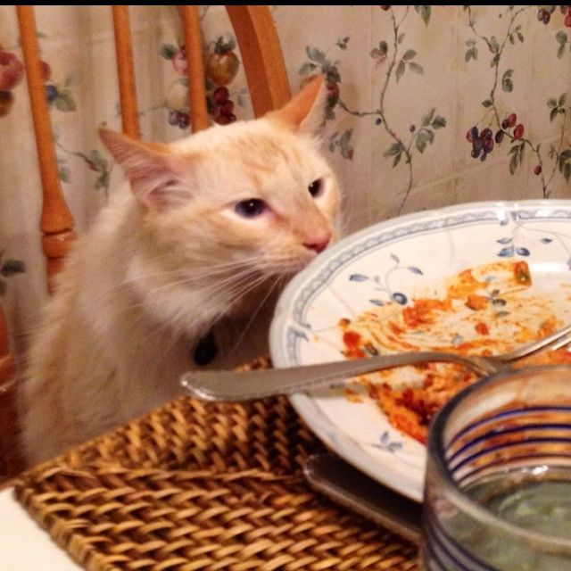

Lasagna

Lasagna Recipe
This is a tasty lasagna recipe for both human and cat
Prepare with care.
Ingredients
- 9 lasagna noodles
- 1 tablespoon olive oil
- 1 pound ground beef
- 1 onion, diced
- Kosher salt and freshly ground black pepper, to taste
- 1 can crushed tomatoes
- 1 tablespoon Italian seasoning
- 1 package whole milk ricotta
- 3 1/2 cups shredded mozzarella, divided
- 1 large egg, beaten
- Preheat oven to 350 degrees F. Lightly oil a 9x13 baking dish
- In a large pot of boiling salted water, cook lasagna
- Hope that your cat doeesn't ruin it
- Feed cat